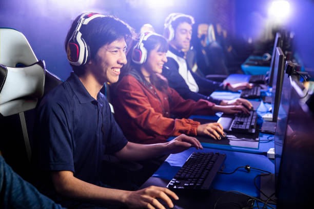

About Us
Joystick Junkies started as a small group of friends passionate about video games. Over time, we’ve grown into a platform for gamers of all ages and skill levels to share their love for gaming. Our goal is to connect players, provide resources, and celebrate gaming culture.
We aim to be the go-to hub for gaming enthusiasts. Whether it’s through guides, news, or community forums, we strive to create a safe, fun, and informative space where gamers can thrive, learn, and enjoy their favorite hobby.